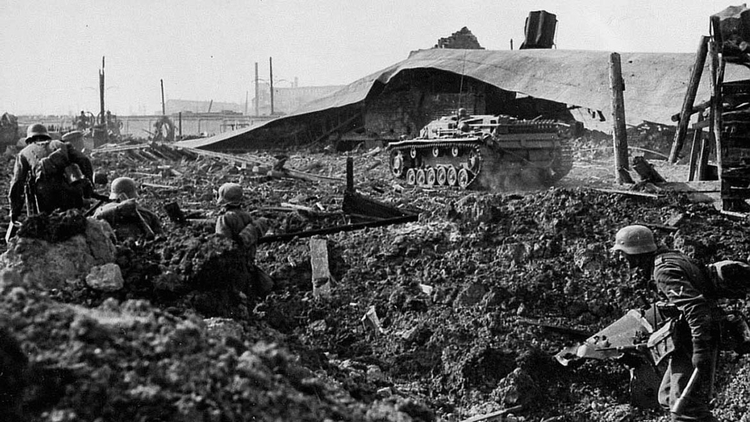

Battle of stalingrad
Battle of stalingrad
The Battle of Stalingrad was a war
between the Red Army of the Soviet Union
and the Wehrmacht of Nazi Germany and their
Axis allies for control of the Soviet city
of Stalingrad, present-day Volgograd, between
August 23, 1942 and the February 2, 1943.
|
 |
|  | The German offensive to capture Stalingrad
began in the late summer of 1942 as part of
Operation Blue or Fall Blau, an attempt by
Germany to seize the oil wells of the Caucasus.
|